Cocinar
Me gusta cocinar en mi tiempo libre, ya que disfruto experimentar con nuevas recetas y aprender diferentes formas de preparar alimentos. También me gusta mucho hacer postres, especialmente cuando intento recrear recetas que veo en internet.

Me gusta cocinar en mi tiempo libre, ya que disfruto experimentar con nuevas recetas y aprender diferentes formas de preparar alimentos. También me gusta mucho hacer postres, especialmente cuando intento recrear recetas que veo en internet.
Disfruto mucho pasar tiempo de calidad con mi familia, ya que es un espacio donde puedo convivir, platicar y fortalecer la relación con ellos. Me gusta compartir momentos tranquilos y agradables que nos permitan estar más unidos.

Yo a mi perrita la considero una "Personita" muuuy importante en mi vida, la amo demasiado. Me gusta compartir muchos momentos junto a ella ya que soy feliz al verla jugar y divertirse.
Me encanta escuchar música durante el día, ya que me acompaña en muchas de mis actividades como hacer tareas, cocinar o relajarme. La música me ayuda a mejorar mi ánimo y a disfrutar más cada momento.

Esta imagen ilustra el código css de nuestra propiedad y valor utilizada
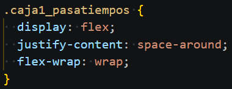
Pan integral tostado con aguacate machacado, huevo cocido en rodajas o estrellado, sal, pimienta y un toque de limón.

Platillo mexicano fresco y crujiente, consistente en una tostada, cubierta con pescado o camarón "cocinado" en jugo de limón, mezclado con jitomate, cebolla, cilantro, chile, especias y algunas salsas de nuestro gusto.

Postre clásico y elegante que combina una base crujiente de galleta con una crema suave y densa de queso, acompañada por una salsa o cobertura de frambuesas
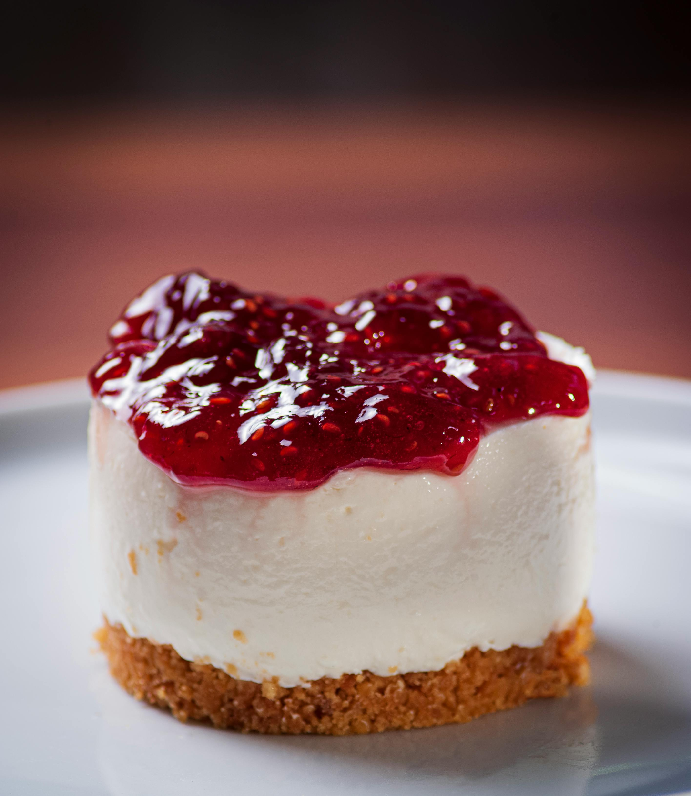
Esta imagen ilustra el código css de nuestra propiedad y valor utilizada
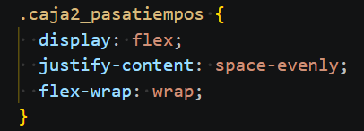
Disfruto mucho jugarlo cuando estamos todos reunidos, reirnos juntos, hacer pequeñas competencias y botanear mientras jugamos.

Me gustan todas las fechas festivas junto a mi familia, pero mi favorita desde pequeña siempre ha sido navidad por los intercambios, juegos dinamicos, regalos y momentos sentimentales.
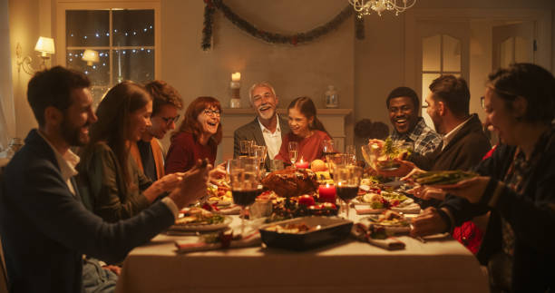
Pasar mis cumpleaños junto a mi familia, desde pequeña han sido los dias mas lindos de mi vida. Muchos recuerdos bonitos tengo hasta la fecha actual.
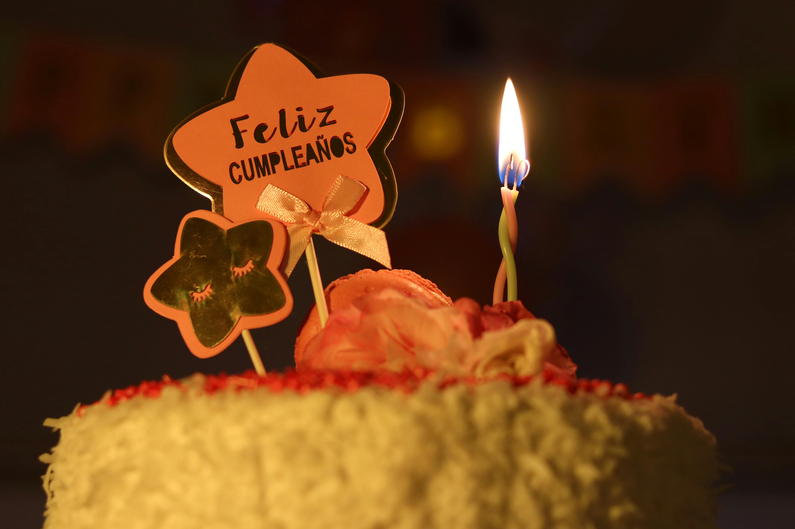
Me gusta pasar el timepo en este tipo de lugares con mi familia, ya que son momentos de risas, bromear y demás.
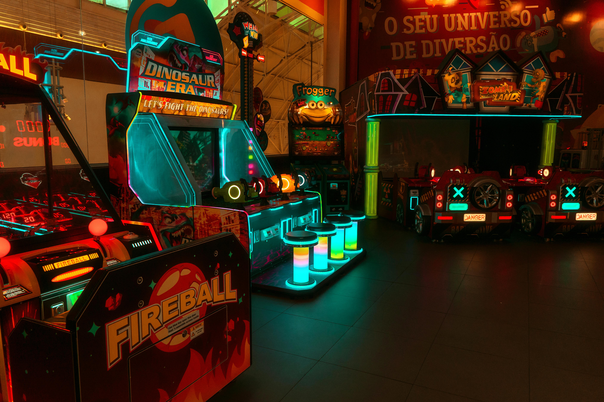
Esta imagen ilustra el código css de nuestra propiedad y valor utilizada
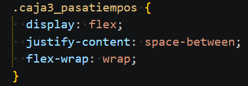
A ella le gusta juagr mucho con los osos de peluches, le gusta que la persigan e intenten quitarselo.
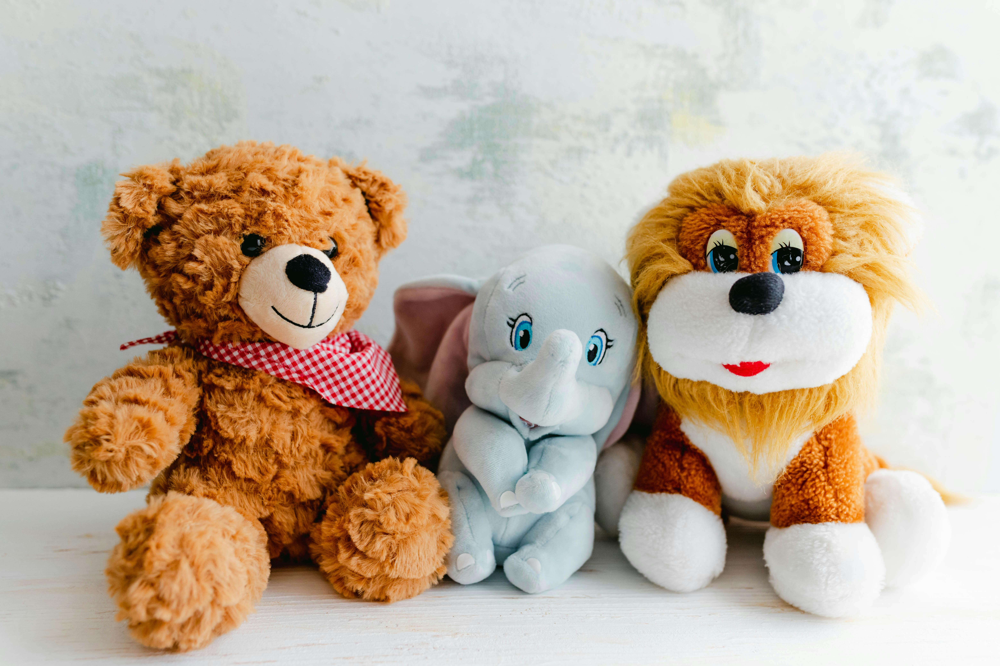
Su snack favorito son las galletas de mantequilla, no son aptas para su salud pero una al mes no se hace daño.
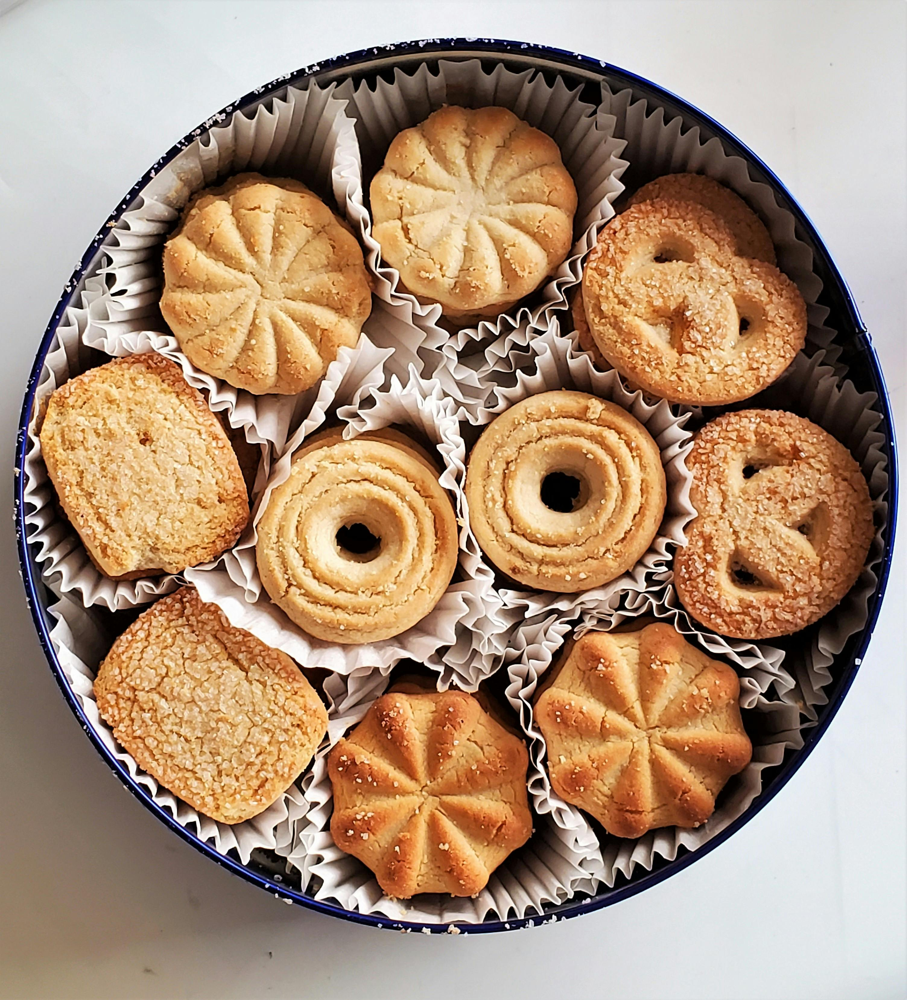
Festejar sus cumpleaños es uno de mis dias favoritos, me gusta celebrar un año de su vida, ya que es importante para mi que ella este aun junto a mi
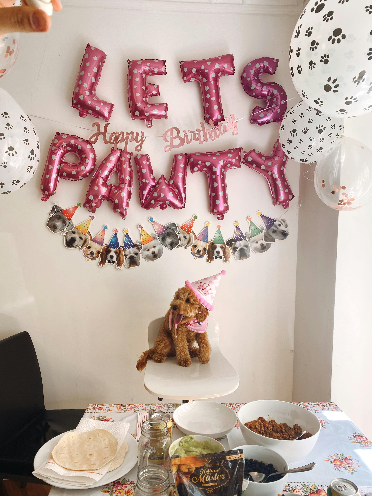
Esta imagen ilustra el código css de nuestra propiedad y valor utilizada
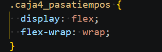
Me gusta escuchar sus canciones cuando estoy arreglandome o
maquillandome.
1.Bunda
2.Latin Girl
3.Supersexi
Me gusta escucharlo cuando me baño, cuando recojo, camino a la
facultad y cuando me maquillo. En todo momento.
1.Si me sobrara el tiempo
2.She Don´t Give a Fo
3.Buscarte lejos
Me gusta escucharlo cuando me baño, hago tarea o de comer.
1.Veneno
2.Amiga soledad
3.El Amor no acaba
Me gusta escucharlo cuando voy camino a la facultad, cuando me baño y
cuanod me arreglo
1.Priti
2.Monaco
3.Corazón
Son pocas las ocaciones que la escucho, no suelo escucharmusica en
ingles. Pero ella me gusta demasiado.
1.Only Girl
2.We Found Love
3.Diamonds
Esta imagen ilustra el código css de nuestra propiedad y valor utilizada
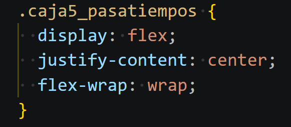